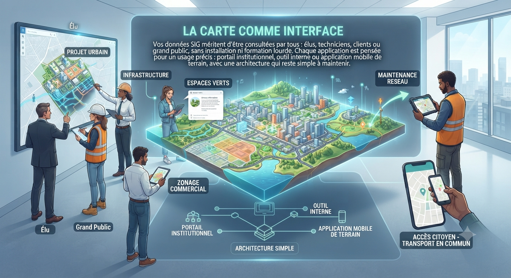
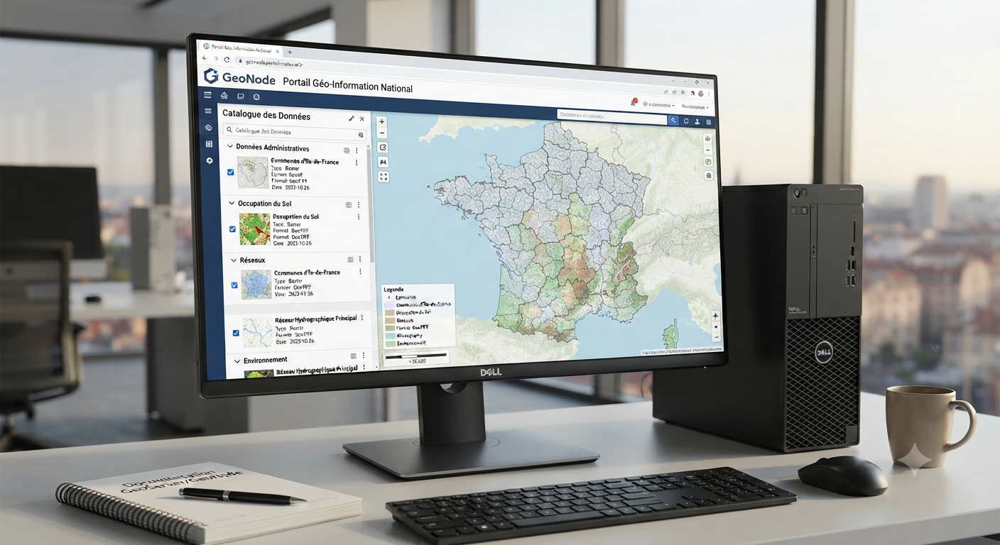
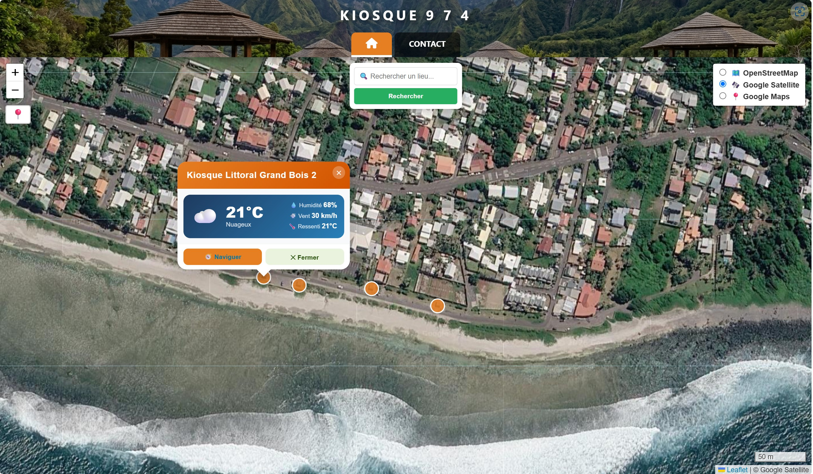
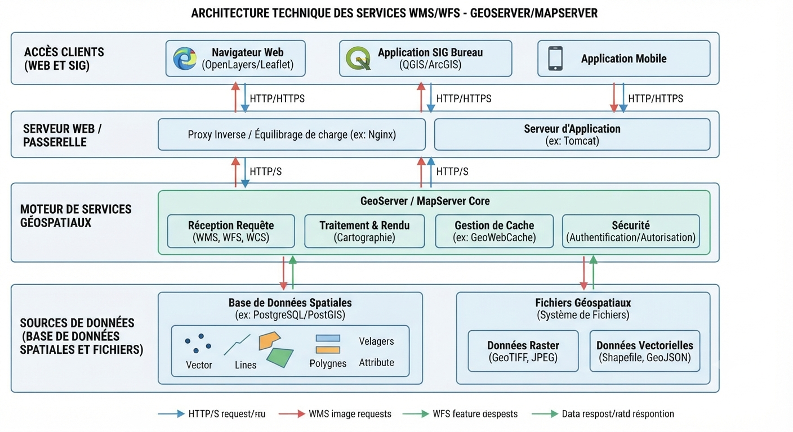
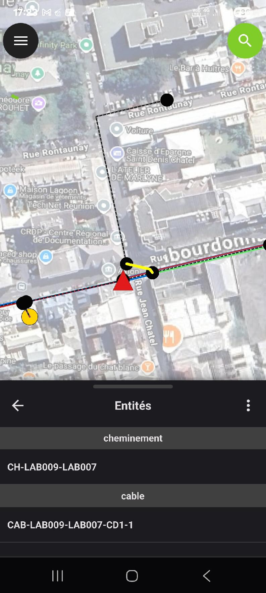

Une carte n'a de valeur que si elle est consultée : le webmapping rend vos données géographiques accessibles, partout, sans logiciel métier.
Vos données SIG méritent d'être consultées par tous : élus, techniciens, clients ou grand public, sans installation ni formation lourde.
Chaque application est pensée pour un usage précis : portail institutionnel, outil interne ou application mobile de terrain, avec une architecture qui reste simple à maintenir.

Les portails institutionnels centralisent, cataloguent et diffusent la donnée géographique d'une collectivité ou d'une organisation.

Chaque application est développée pour répondre à un besoin métier concret, avec les interactions utiles et rien de superflu.

Un serveur cartographique bien configuré rend vos données exploitables aussi bien dans un navigateur que dans un logiciel SIG desktop.

Sur le terrain, la carte doit fonctionner même sans réseau, et se synchroniser dès la connexion retrouvée.

Décrivez votre besoin, nous proposons l'architecture technique adaptée.